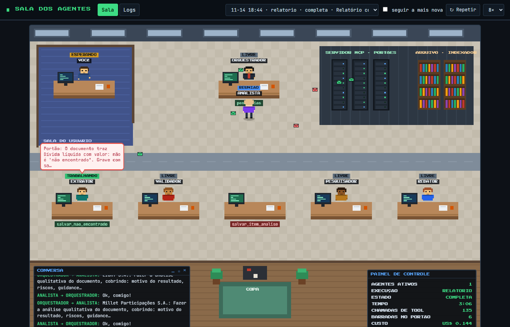
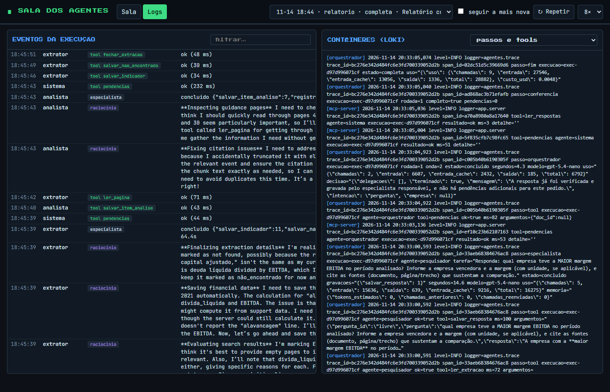

Sistema 6 · sala/
Sala dos agentes
A execução dos agentes em tempo real, como um escritório: quem está trabalhando, com qual tool, o que o portão barrou, o que um disse ao outro. E uma aba com os logs.
O que é
Um escritório em pixel art onde cada agente é uma pessoa: o usuário na sala dele, o orquestrador no centro, os cinco especialistas nas mesas de baixo, o servidor MCP como sala de racks e o indexador como arquivo. A sala acompanha uma execução real, passo a passo, sem simulação.

De onde vêm os dados
Evento por evento
Cada passo gravado pelo orquestrador e cada linha da auditoria do servidor MCP vira uma ação na fila de quem age. As pessoas andam pelo corredor, falam em balões e voltam à mesa.
| O que acontece | De onde vem | Na sala |
|---|---|---|
| Pedido do usuário | passo inicio | o orquestrador vai até o usuário e ouve o pedido |
| Classificação | passo intencao | balão de pensamento: “Isso é pergunta.” |
| Delegação | passo delegando | o orquestrador vai à mesa do especialista e passa a tarefa; ele fica TRABALHANDO |
| Chamada de tool | auditoria do servidor MCP | envelope da mesa ao rack; a tool aparece sobre a mesa; recusa de portão vira balão vermelho |
| Raciocínio | passo raciocinio | balão de pensamento com o resumo do raciocínio |
| Fim do especialista | passo especialista | ele leva o relato ao orquestrador: o que gravou e o tempo |
| Conferência | passo conferencia | o orquestrador vai aos racks: “o que ainda falta?” |
| Fim | passo fim | o orquestrador entrega ao usuário |
Controles e logs
- Seguir a mais nova: a sala abre sozinha a execução que acabou de começar.
- Repetir, em 1×, 2×, 4× ou 8×: refaz uma execução no ritmo em que aconteceu, dividido pela velocidade. Em 1×, cada evento aparece no mesmo instante relativo da execução real.
- Painel de controle: agentes ativos, estado, tempo, chamadas de tool, barradas pelos portões e custo.
- Conversa: a execução inteira, com o texto completo das falas, dos pensamentos (em roxo) e das recusas dos portões (em vermelho). Minimizar e maximizar, filtro por texto ou agente, filtro por tipo e rolagem: quem rolou para cima não é puxado de volta quando chega fala nova.

Limites
- Uma sessão por vez: o login fica no servidor da sala. É uma ferramenta de acompanhamento local.
- O raciocínio dos especialistas chega quando cada um termina (vem no relato), então os balões de pensamento deles aparecem no fim do trabalho, e não durante.
- As mesas são as dos cinco especialistas atuais; um agente novo aparece nos logs, mas não ganha mesa.
- Sem a
ADMIN_KEYdo servidor MCP, a sala mostra os passos, mas não os envelopes das tools.
Como subir
cd sala && cp .env.example .env # ADMIN_KEY: a mesma do servidor MCP
docker compose up -d # http://localhost:3300Sem build: a imagem do uv roda o servidor com as dependências fixadas no compose, e a pasta é montada, então editar a página ou o servidor vale ao recarregar. Depende do indexador, do servidor MCP e dos agentes no ar, e da observabilidade para a aba de logs. O login é o mesmo do chat.
Mapa do código
servidor.py FastAPI: login, execuções, passos + auditoria, Loki, e serve pagina/
pagina/
├─ index.html a estrutura: cabeçalho, sala, janelas, aba de logs, login
├─ sala.css o visual
├─ cena.js o escritório: lugares, pessoas, fila de ações e desenho no canvas
├─ conversa.js a janela de conversa (filtros, minimizar, maximizar) e o painel
├─ eventos.js passo do orquestrador / chamada da auditoria → ação na sala
├─ dados.js API da sala, eventos da aba Logs, abrir, repetir e acompanhar
├─ logs.js as abas e os logs do Loki
└─ inicio.js login e o começoOs scripts são clássicos e carregados em ordem pelo index.html: o que um declara, os seguintes
enxergam. Para mudar o que acontece na sala com um evento, o lugar é eventos.js; para mudar o
desenho, cena.js.
Fluxos com imagens: [docs/fluxos.html](docs/fluxos.html).